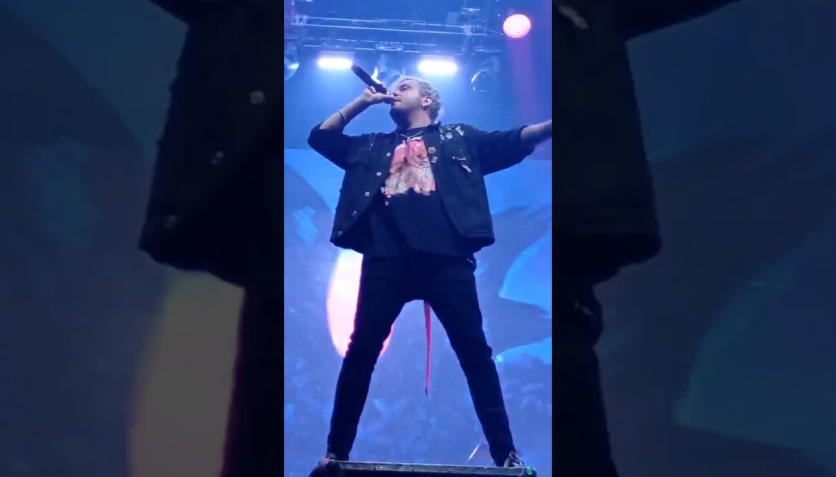
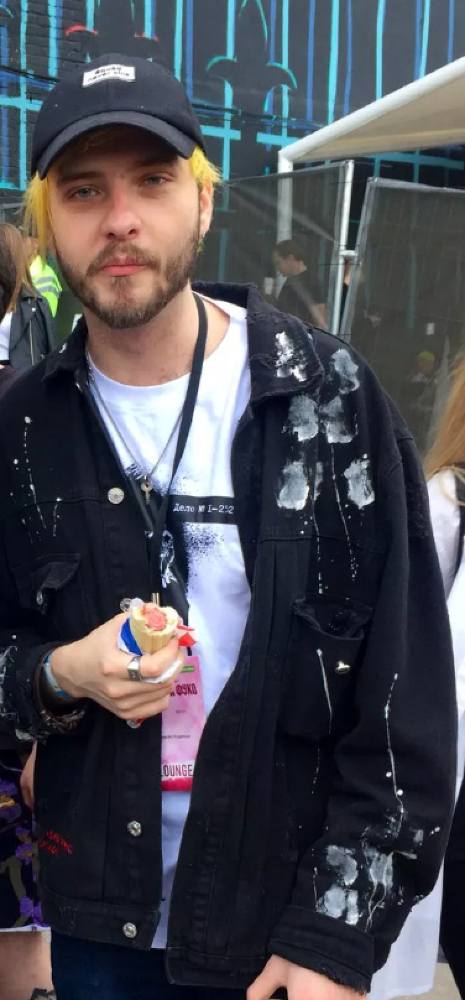

Биография музыканта
Pyrokinesis — популярный рэп- и хип-хоп-исполнитель российского музыкального андеграунда. Как и многие представители рэп-направления, начинал с рэп-баттлов, позднее начал создавать яркие и нетривиальные композиции, затрагивающие важные и близкие слушателям темы.
Детство и юность
Музыкант родился 16 декабря 1995 года в Краснодаре. О детских годах в жизни рэпера ничего не известно. Имя певца при рождении — Андрей. Еще будучи подростком, он начал интересоваться музыкой отечественного андеграунда, в частности рэпом и хип-хопом. Как и многие творческие подростки, парень пробовал сочинять первые стихотворения и рассказы.

Музыка
Первые записи певец сделал, когда учился в 11-м классе. Тогда Андрей узнал, что у его приятеля имеется собственная студия. Юноша отдался творческому процессу, занялся сочинением текстов и музыки и даже забросил учебу. Затем исполнитель попробовал силы в онлайн-баттлах, в одном из которых дошел до финала. В 2014 году он отправился в Сочи, чтобы участвовать в поэтическом состязании с рэпером Симбой.
Для творчества юноша выбирает себе псевдоним Pyrokinesis. Ник отражает характер музыканта. Андрей считает огонь двойственным, дающим, с одной стороны, разрушение, с другой — тепло и энергию. Эта двойственность близка и самому рэперу — он вспыльчив, но быстро отходит, любит тепло и не приемлет холод.
2015 год открывает новую страницу в творческой биографии автора — Андрей издает дебютную пластинку под названием «5». В альбом музыкант включил 5 треков, в которых коснулся личных тем. Такой художественный ход пришелся поклонникам по душе. Многие оценили откровенность и искренность текстов песен, а также их гармонию с музыкой.
Хип-хопер продолжил интенсивно работать над музыкальным материалом, в результате чего в этом же году представил публике еще один релиз Black Roze х Red Roze. В пластинку вошли 8 композиций. Диск создавался в сотрудничестве с исполнителем STED.D, который отвечал за музыкальную составляющую диска. В одной из песен можно услышать голос этого рэпера.
Также в 2015-м певец порадовал фанатов выходом 3-го альбома под названием Burn To Die. В каждом из пяти треков, вошедших в диск, раскрывается внутренний мир автора, его чувства и эмоции.
В скором времени была издана и 4-я пластинка Eclipse. Вместе с музыкантом над проектом работали популярные исполнители, такие как Flexogramm, Sanabry, Dashevsky и другие. В результате звучание альбома, в который включили 9 песен, раскрылось новыми сочными нотами, а тексты обрели остроту.
Столько же композиций вошло и в следующий релиз рэпера «Терновый венец Эволюции», вышедший в 2017 году. Как и предыдущие работы Pyrokinesis, диск оказался успешным и стал популярным среди поклонников музыкальной альтернативы. Зимой 2018-го певец представил новый альбом с оригинальным названием «Корми демонов по расписанию». Один из 8 треков, входящих в пластинку, хип-хопер записал вместе с STED.D.
Кроме того, Андрей успел выпустить вместе с рэпером Найтивыход трек «Вечный двигатель». В Сети появилось много фанатских клипов на эту композицию. Музыкант неоднократно признавался, что источником вдохновения для него становится творчество великих гениев, в число которых входят Уильям Шекспир, Энди Уорхол, Бэнкси и другие. Немало кумиров у парня и в музыке. Андрей не боится экспериментировать, утяжелять композиции элементами рок-музыки, играть словами.
